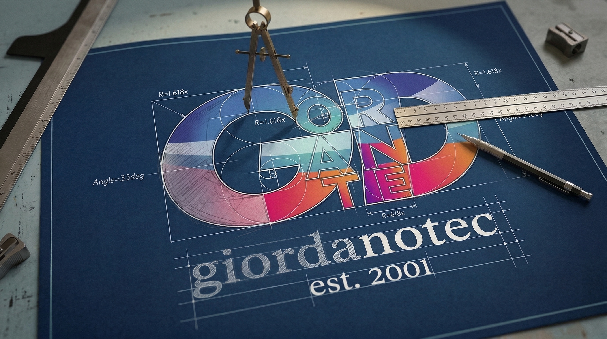
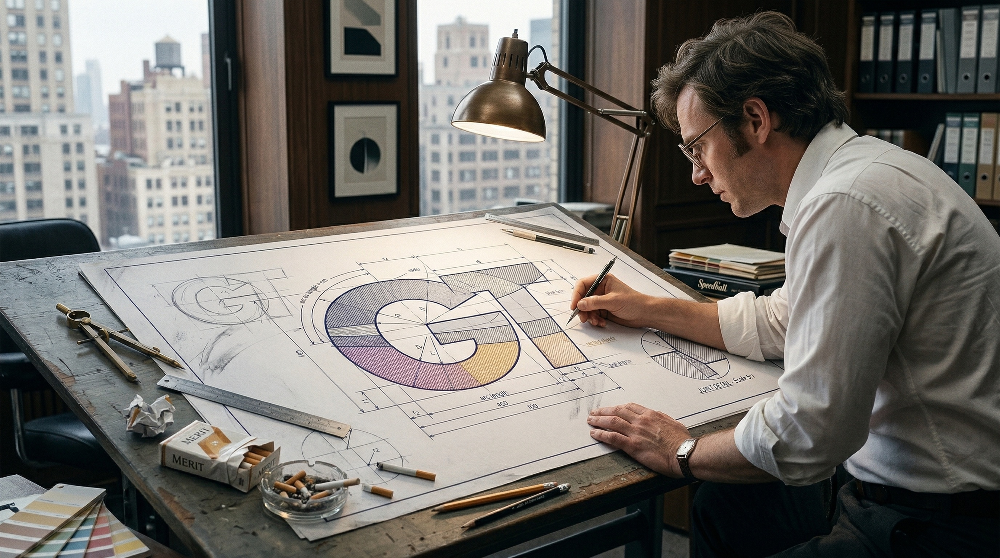
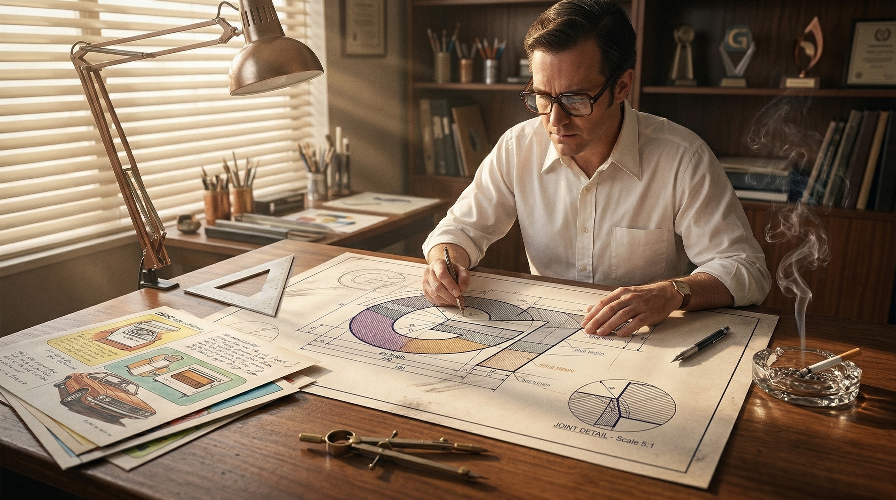
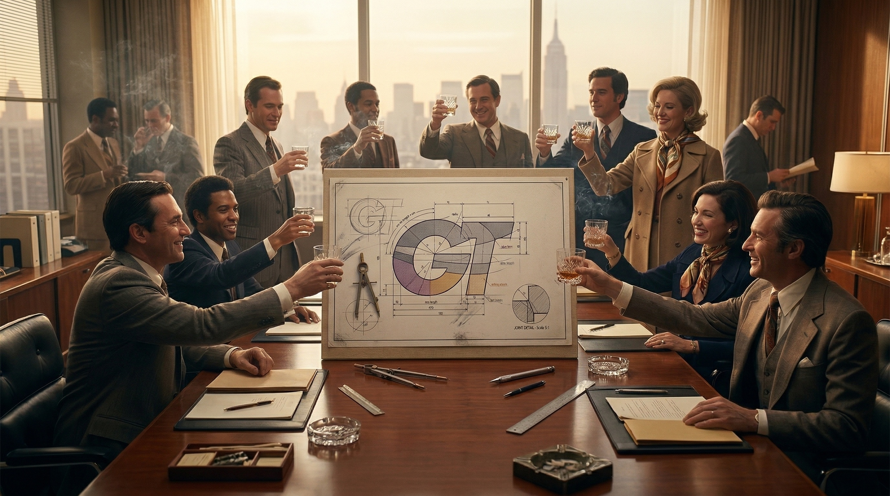
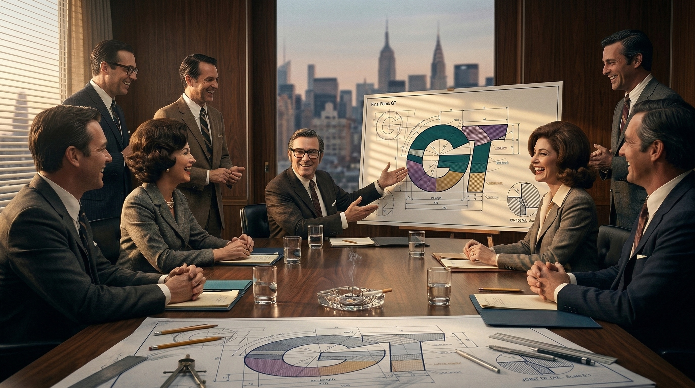
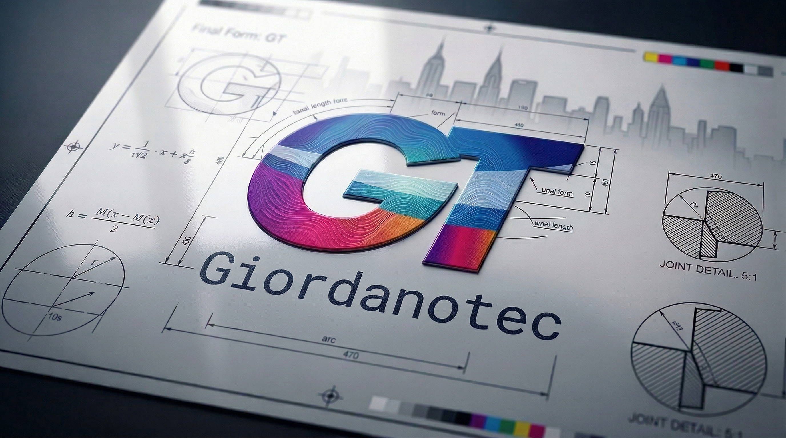

From Brief to Final Mark:
Building a Brand Identity

Understanding the Client
Every great logo begins with listening. We sit down with the client — not just to hear what they want, but to understand who they are. Industry, values, audience, competitors. We ask the questions others skip.
This discovery phase is where strategy is born. Before a single line is drawn, we know what the mark needs to say.
Research & Visual Direction
We map the competitive landscape and define a visual language. Mood boards, typographic pairings, color psychology. Nothing is decorative — every choice has a reason.
At this stage we align with the client on direction before investing hours in execution. This is where we save time and earn trust.


Concept & Sketching
Pencil meets paper. We explore multiple directions rapidly — abstract marks, wordmarks, monograms. The best ideas rarely come first; they emerge through iteration.
Three strong directions are refined and presented. Each one tells a different story about the brand.
Digital Refinement
The chosen concept moves into vector. Proportions are engineered, curves perfected, spacing made optically correct. This is where craft meets precision.
A logo that looks good at business-card size must also command a billboard. We test every scale.


Color & Typography System
Color is emotion made visible. We build a palette that works across print, screen, and merchandise — with primary, secondary, and neutral tones defined precisely in HEX, RGB, and CMYK.
Typography is paired to reinforce the mark: a headline face for authority, a body face for clarity.
Brand in the Real World
The logo is applied across touchpoints: business card, letterhead, social profiles, signage. Seeing the identity live validates the work and reveals any refinements needed.
We present mockups that make the brand tangible. The client sees what they're launching into the world.



07 Delivery & Brand Guidelines — The final package includes the logo in all formats (SVG, PDF, PNG), a concise brand guide, and a usage manual. The client leaves with everything they need to maintain consistency — forever.
Ready to build your
brand identity?
A logo is the beginning of a conversation between your business and the world. Let's make sure it says exactly the right thing.
Let's talk — no brief is too small, no vision too ambitious.
GET IN TOUCH